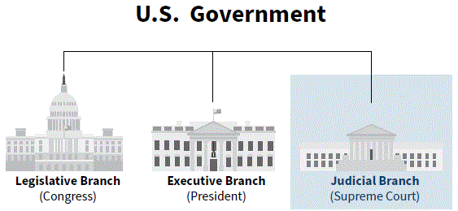
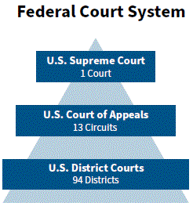

NOTE: click on red numbers to see related questions from the 2025 citizenship test.
NOTA: haga clic en los números rojos para ver las preguntas relacionadas del examen de ciudadanía de 2025.
[p29]
In this chapter, you will learn about:
The Judicial Branch is one branch or part of the government.[q16]
The parts of the Judicial Branch are the Supreme Court and other federal courts.[q50] The Supreme Court is the highest court in the United States.[q52] This means that the Supreme Court's decision about a law or legal case is final. The other federal courts are sometimes called lower federal courts.
When the Founders wrote the Constitution, they did not want the judges who serve on the Supreme Court and on other federal courts to make decisions about the law based on politics or elections. [q56] Judges who serve on the Supreme Court and other federal courts are sometimes called federal judges. The Founders wanted federal judges to make decisions based on the Constitution and the rule of law. This is why federal judges are not elected to office. [q55] The President nominates someone to become a federal judge on the Supreme Court or on a lower federal court. That person must also be approved by the U.S. Senate to become a federal judge.
The process for a person to become a federal judge is an example of the separation of powers of government because all three branches of government are involved. The separation of powers is important because it stops one branch of government from becoming too powerful.[q15]
[p30]
[Diagram: U.S. Government — Legislative Branch (Congress), Executive Branch (President), Judicial Branch (Supreme Court). Federal Court System — U.S. Supreme Court: 1 Court; U.S. Court of Appeals: 13 Circuits; U.S. District Courts: 94 Districts.]
[Photo: Supreme Court Justices Clarence Thomas and Antonin Scalia.]
[p29]
En este capítulo, aprenderá sobre:
La Rama Judicial es una rama o parte del gobierno.
Las partes de la Rama Judicial son la Corte Suprema y otros tribunales federales. La Corte Suprema es el tribunal más alto de los Estados Unidos. Esto significa que la decisión de la Corte Suprema sobre una ley o caso legal es final. Los otros tribunales federales a veces se llaman tribunales federales inferiores.
Cuando los Fundadores escribieron la Constitución, no querían que los jueces que sirven en la Corte Suprema y en otros tribunales federales tomaran decisiones sobre la ley basadas en la política o elecciones. Los jueces que sirven en la Corte Suprema y otros tribunales federales a veces se llaman jueces federales. Los Fundadores querían que los jueces federales tomaran decisiones basadas en la Constitución y el estado de derecho. Esta es la razón por la cual los jueces federales no son elegidos para el cargo. El Presidente nomina a alguien para convertirse en juez federal en la Corte Suprema o en un tribunal federal inferior. Esa persona también debe ser aprobada por el Senado de los Estados Unidos para convertirse en juez federal.
El proceso para que una persona se convierta en juez federal es un ejemplo de la separación de poderes del gobierno porque las tres ramas del gobierno están involucradas. La separación de poderes es importante porque evita que una rama del gobierno se vuelva demasiado poderosa.
[p30]
[Diagrama: Gobierno de los Estados Unidos — Rama Legislativa (Congreso), Rama Ejecutiva (Presidente), Rama Judicial (Corte Suprema). Sistema de Tribunales Federales — Corte Suprema de los Estados Unidos: 1 Tribunal; Tribunal de Apelaciones de los Estados Unidos: 13 Circuitos; Tribunales de Distrito de los Estados Unidos: 94 Distritos.]
[Foto: Jueces de la Corte Suprema Clarence Thomas y Antonin Scalia.]
[p31]
One of the important roles of the Judicial Branch is to review laws.[q51] This means that they can decide if a law follows the Constitution. In the United States, the Constitution is the Supreme Law of the Land.[q2] This means that everyone in the United States must follow the Constitution. This also means that the laws that Congress writes must also follow the Constitution. If someone in the United States thinks that a law does not follow the Constitution, that person can bring a legal case to a federal court to challenge the law.
[Photo: Statue of Lady Justice]
Each of the courts in the Judicial Branch can only review a law if there is a legal case before it. This means that the Supreme Court and the lower federal courts can only make a decision about a law or a legal case when they have the legal authority to hear a case that is brought before the court.
The Supreme Court may review a decision about a law or legal case from a lower federal court. If the Supreme Court reviews a decision about a law or legal case, then they must make a decision. There are no other courts in the United States that can change the decision of the Supreme Court. This is one reason that the Supreme Court is the highest court in the United States.[q52]
[Photo: Courtroom of the Supreme Court of the United States.]
[p31]
Uno de los importantes papeles de la Rama Judicial es revisar las leyes. Esto significa que pueden decidir si una ley sigue la Constitución. En los Estados Unidos, la Constitución es la Ley Suprema de la Nación. Esto significa que todos en los Estados Unidos deben seguir la Constitución. Esto también significa que las leyes que escribe el Congreso también deben seguir la Constitución. Si alguien en los Estados Unidos piensa que una ley no sigue la Constitución, esa persona puede presentar un caso legal ante un tribunal federal para impugnar la ley.
[Foto: Estatua de la Dama de la Justicia]
Cada uno de los tribunales en la Rama Judicial solo puede revisar una ley si hay un caso legal ante él. Esto significa que la Corte Suprema y los tribunales federales inferiores solo pueden tomar una decisión sobre una ley o un caso legal cuando tienen la autoridad legal para escuchar un caso que se presenta ante el tribunal.
La Corte Suprema puede revisar una decisión sobre una ley o caso legal de un tribunal federal inferior. Si la Corte Suprema revisa una decisión sobre una ley o caso legal, entonces debe tomar una decisión. No hay otros tribunales en los Estados Unidos que puedan cambiar la decisión de la Corte Suprema. Esta es una razón por la cual la Corte Suprema es el tribunal más alto de los Estados Unidos.
[Foto: Sala de audiencias de la Corte Suprema de los Estados Unidos.]
[Photo: There are nine justices on the U.S. Supreme Court.]
There are nine justices on the Supreme Court.[q53] The word "justice" is another word for "judge." After the Supreme Court reviews a case, the justices meet to discuss the case and vote on the decision.
One justice on the Supreme Court is called the Chief Justice of the United States. The Chief Justice has many duties. Some of the duties are:
The Chief Justice serves as a leader on the Supreme Court, but the justices make their own decisions when voting on each case. When a majority of the justices vote the same way on a case, they write a decision that explains their reasons.
To find the name of the current Chief Justice of the United States, please visit:[q57] supremecourt.gov/about/justices.aspx.
A majority means that more than half of the justices vote the same way on a case. For example: When 9 Supreme Court Justices hear a case, at least 5 justices must vote the same on the case in order to have a majority.[q54]
[Foto: Hay nueve jueces en la Corte Suprema de los Estados Unidos.]
Hay nueve jueces en la Corte Suprema. La palabra "justice" es otra palabra para "juez". Después de que la Corte Suprema revisa un caso, los jueces se reúnen para discutir el caso y votar sobre la decisión.
Un juez en la Corte Suprema se llama el Presidente de la Corte Suprema de los Estados Unidos. El Presidente de la Corte Suprema tiene muchos deberes. Algunos de los deberes son:
El Presidente de la Corte Suprema sirve como líder en la Corte Suprema, pero los jueces toman sus propias decisiones al votar en cada caso. Cuando una mayoría de los jueces votan de la misma manera en un caso, escriben una decisión que explica sus razones.
Una mayoría significa que más de la mitad de los jueces votan de la misma manera en un caso. Por ejemplo: Cuando 9 jueces de la Corte Suprema escuchan un caso, al menos 5 jueces deben votar igual en el caso para tener una mayoría.
Para encontrar el nombre del actual Presidente de la Corte Suprema de los Estados Unidos, por favor visite: supremecourt.gov/about/justices.aspx.
What is the supreme law of the land? *
What founding document said the American colonies were free from Britain?
There are three branches of government. Why?
Name the three branches of government.
What is one part of the judicial branch?
What does the judicial branch do?
What is the highest court in the United States? *
How many seats are on the Supreme Court?
How many Supreme Court justices are usually needed to decide a case?
How long do Supreme Court justices serve?
Supreme Court justices serve for life. Why?
Who is the Chief Justice of the United States now?